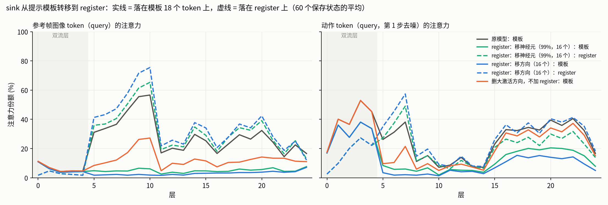
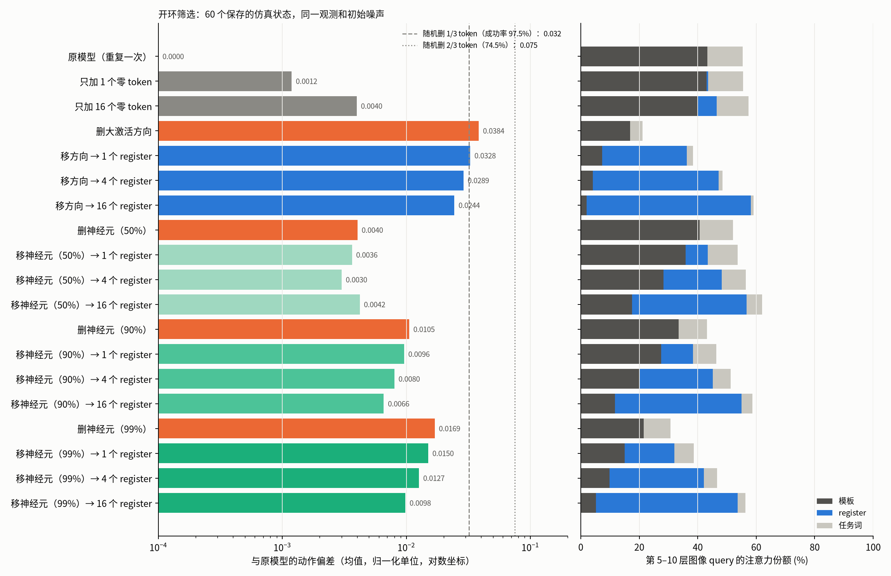
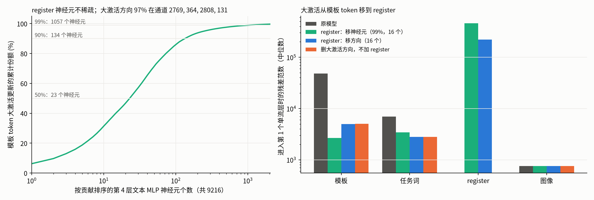
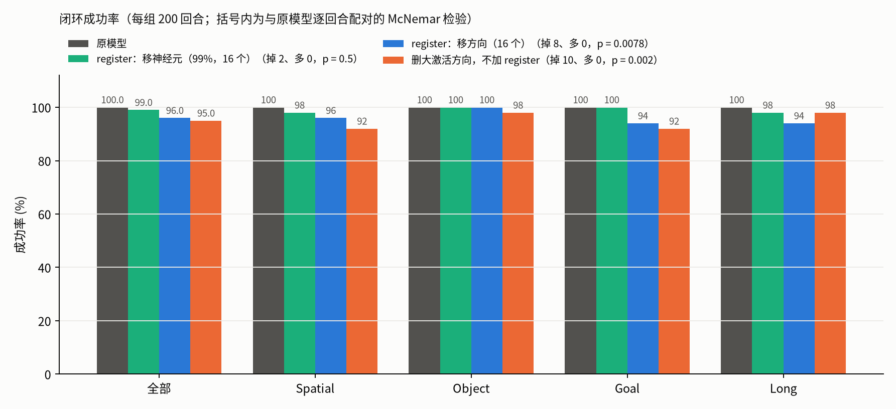
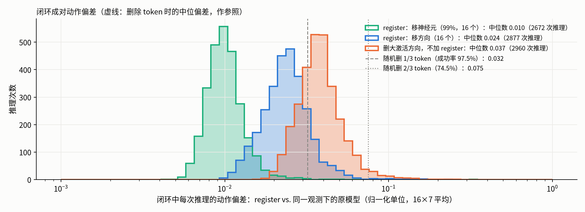
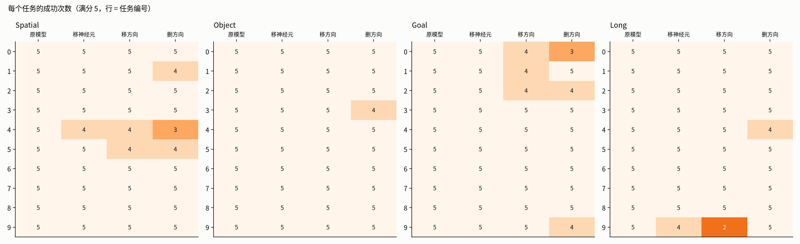

LIBERO：ImageWAM-FLUX.2-4B 的训练无关 register（test-time register，OSMesa 渲染，每组 200 回合）
- sink 位置：图像和动作 token 把注意力停在提示模板的 18 个 token 上；这些 token 在第 4 层（最后一个双流层）文本 MLP 被写入大激活（4 个通道）。
- register：在 proprio 之后追加零初始化 token；把第 4 层的大激活（神经元或方向）从所有文本 token 移到 register 上。不训练、不改权重。

register 接走了图像 token 落在模板上的注意力；动作 token 也有一部分转到 register 上。

只加零 token 几乎不改变输出；移走 90% 以上的大激活时，加 register 的偏差都小于不加，且 register 越多偏差越小。

大激活在第 4 层由上百个神经元共同写入，集中在 4 个通道；移动后模板 token 范数降到任务词水平，register 成为最大范数 token。

原模型 100.0%；register：移神经元（99%，16 个） 99.0%；register：移方向（16 个） 96.0%；删大激活方向，不加 register 95.0%。

闭环成对偏差中位数：register：移神经元（99%，16 个） 0.010；register：移方向（16 个） 0.024；删大激活方向，不加 register 0.037。

每个任务 5 个初始状态的成功次数。